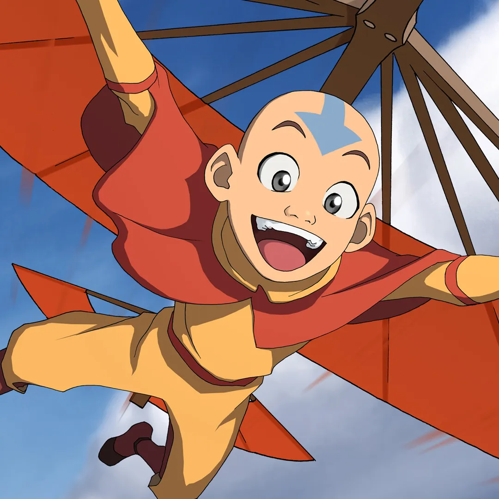

Aang
Es el último Maestro Aire y el Avatar, el único capaz de controlar los cuatro elementos: aire, agua, tierra y fuego. Aang es pacifista, alegre y aventurero, pero también debe enfrentarse a la responsabilidad de traer la paz al mundo.